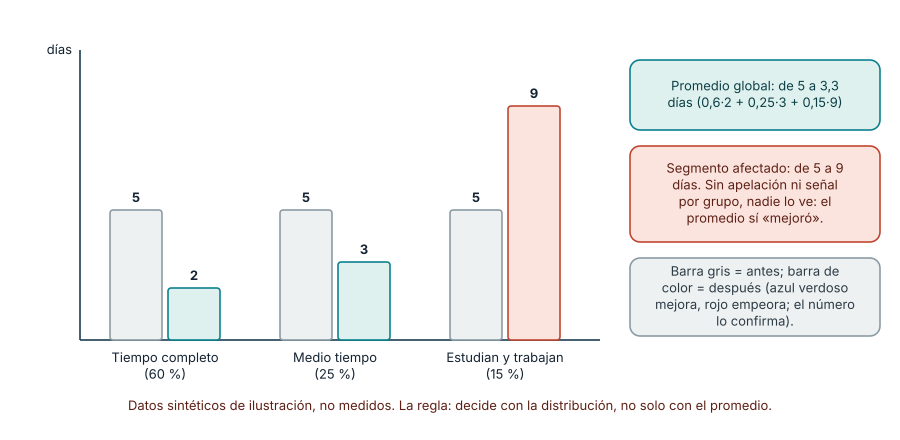
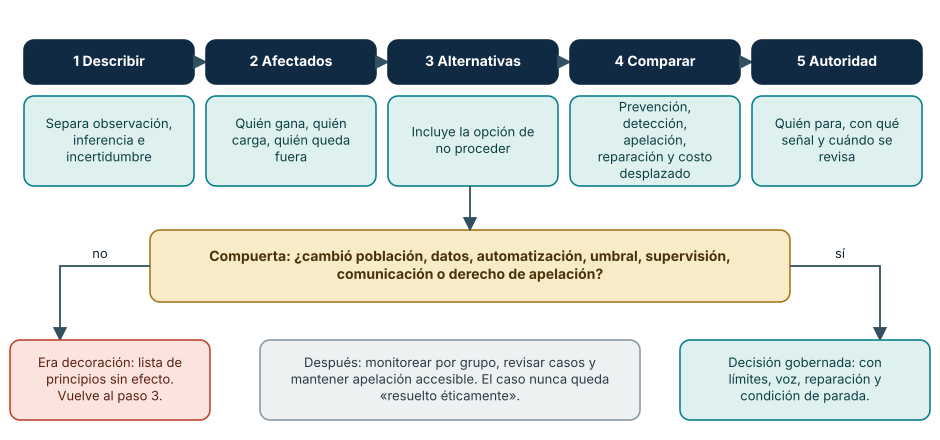
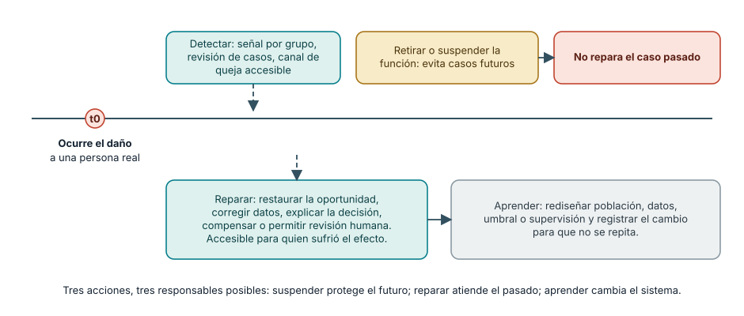

← SE-003 · ↑ Parte 00 · 📚 Índice completo · SE-005 →
Antes de empezar
Ya sabes ubicar una decisión en el ciclo de vida y asignarle una persona responsable. Eso todavía no responde si la decisión es defendible. En Campus Abierto, un modelo de priorización reduce el tiempo promedio, pero rechaza con mayor frecuencia a quienes estudian y trabajan, y no existe canal de apelación.
La meta de hoy no es etiquetar la situación como “ética” o “no ética”. Construirás un análisis que muestre afectados, beneficios, daños, incertidumbre, alternativas y reparación. En SE-005 convertirás esas obligaciones en interfaces de colaboración: quién debe participar, quién puede detener y quién revisa.
Prerrequisitos
Stakeholders, ciclo de vida y autoridad (SE-001–SE-003).
Problema auténtico
Un modelo mejora conversión global, pero rechaza más a un grupo pequeño y no ofrece apelación. El encargo parece legal y rentable. ¿Qué obligaciones conserva el equipo?
Objetivos observables
Identificarás afectados, separarás legalidad de responsabilidad, analizarás distribución de daño y documentarás mitigación, desacuerdo y reparación.
Temas y por qué importan
| Tema | Riesgo de omitirlo |
|---|---|
| Interés público | optimizar solo para cliente |
| Daño y beneficio | promedios que ocultan grupos |
| Honestidad | incertidumbre presentada como certeza |
| Competencia | aceptar autoridad sin capacidad |
| Reparación | detectar daño sin apelación |
Mapa conceptual
Ver la notación fuente del diagrama
flowchart TD
D[Decisión] --> A[Afectados]
D --> E[Evidencia e incertidumbre]
A --> H[Beneficios y daños]
E --> H --> O[Opciones y controles]
O --> J[Juicio profesional] --> R[Monitorear y reparar]El código orienta juicio; no es un algoritmo. Principios pueden entrar en tensión.
Conceptos y decisiones
1. Legalidad, política y ética responden preguntas diferentes
La ley establece obligaciones y prohibiciones en una jurisdicción. Un contrato reparte compromisos entre partes. Una política institucional define conducta interna. La ética profesional pregunta además qué debe hacer una persona con conocimiento especializado cuando una decisión afecta bienestar, autonomía, seguridad, privacidad u oportunidades. Que una opción sea legal o solicitada no demuestra que sea responsable; que parezca injusta tampoco autoriza a ignorar procesos legales o afirmar hechos sin evidencia.
Los códigos de ACM y de IEEE-CS/ACM no son algoritmos que produzcan una respuesta única. Ofrecen principios y deberes que pueden entrar en tensión: privacidad frente a observabilidad, acceso frente a prevención de abuso, obligación con empleador frente a interés público. El juicio profesional consiste en hacer visible esa tensión, buscar alternativas y justificar por qué una obligación recibe mayor peso en el caso concreto.
2. El daño debe buscarse más allá de la persona usuaria promedio
Un stakeholder es cualquier persona o grupo capaz de afectar o ser afectado. Incluye a quien usa la interfaz, quien queda excluido, quien soporta una decisión, quien trabaja para corregirla y quien recibirá efectos futuros. Si solo se consulta a quienes completaron el flujo, desaparecen quienes abandonaron, no tenían dispositivo o fueron rechazados antes de poder reclamar.
Analizar daño exige preguntar por distribución, no solo promedio. Una mejora global puede concentrar errores graves en un grupo pequeño. También importan escala, severidad, duración, reversibilidad y posibilidad de impugnar. Un mensaje incómodo reversible no tiene la misma gobernanza que perder una beca sin explicación, aunque ambos afecten al mismo número de personas.
La ausencia de quejas no demuestra ausencia de daño. Reclamar puede ser desconocido, costoso, inaccesible o peligroso. Por eso se diseñan señales proactivas, revisión de casos y canales de apelación comprensibles. Escuchar es parte del mecanismo de control, no una cortesía posterior.

Cómo leer la figura. Tres grupos con el mismo punto de partida (5 días). Tras la priorización, dos grupos mejoran y uno empeora de forma marcada. Como el grupo afectado pesa menos en la población, el promedio ponderado baja de 5 a 3,3 días y el tablero global muestra una mejora: 0,6 · 2 + 0,25 · 3 + 0,15 · 9 = 3,3. Esa aritmética es la razón por la que la ética de datos exige mirar distribución, severidad y reversibilidad además del promedio. Dónde deja de valer: los números son sintéticos y sirven solo para mostrar el mecanismo. En un caso real hay que decidir qué grupos segmentar sin usar datos innecesarios o sensibles, y cada segmentación tiene su propio riesgo de privacidad y de estigmatización.
3. Deliberar es construir opciones, no elegir entre obedecer o bloquear
Una deliberación defendible sigue una secuencia:
- describir la decisión y separar observaciones, inferencias e incertidumbre;
- identificar afectados, derechos, beneficios, daños e incentivos del equipo;
- proponer al menos una alternativa material, incluida la opción de no proceder;
- comparar prevención, detección, apelación, reparación y costo desplazado;
- definir autoridad, condición de parada y revisión posterior.
El análisis pierde valor si todas las alternativas son variaciones cosméticas de una decisión ya tomada. También falla cuando solo enumera principios sin cambiar diseño. Una consideración ética se vuelve operativa cuando modifica población, datos, automatización, umbral, supervisión, comunicación o derecho de apelación.

Cómo leer la figura. Los cinco pasos reproducen la secuencia de la clase. La compuerta de abajo es la prueba que separa deliberar de justificar: una consideración ética es operativa si modifica la población, los datos recogidos, el grado de automatización, el umbral, la supervisión, lo que se comunica o el derecho de apelación. Si nada de eso cambió, el análisis volvió al paso 3 con alternativas reales. Dónde deja de valer: la compuerta detecta decoración, no corrección moral. Un diseño puede cambiar y seguir siendo inaceptable; por eso el último paso fija autoridad de parada y revisión posterior, y por eso el desacuerdo documentado también es una salida válida.
4. Competencia, honestidad y conflicto de interés
Aceptar una decisión para la que no se posee competencia puede ser un riesgo ético. La respuesta no siempre es retirarse: se puede limitar alcance, pedir revisión, realizar una prueba o incorporar conocimiento de dominio. Lo irresponsable es presentar certeza o autoridad que no se tiene.
Los conflictos de interés deben declararse porque cambian cómo se interpreta el juicio. Un equipo evaluado por conversión tiene incentivo para minimizar abandonos causados por presión. Una empresa que vende el modelo no es fuente independiente sobre su equidad. Declarar el conflicto no invalida automáticamente la evidencia, pero exige controles y revisión adecuados.
5. Escalamiento, parada y reparación
Escalar profesionalmente significa construir un registro verificable: hechos, inferencias, personas afectadas, principios, políticas, opciones, urgencia y respuesta solicitada. Un mensaje que acusa sin separar estos elementos dificulta actuar y puede dañar a otras personas. La autoridad de parada debe definirse antes de la crisis y ser proporcional al impacto.
Cuando el daño ocurre, eliminar la función puede evitar repetición, pero no repara el caso pasado. La reparación puede requerir restaurar una oportunidad, corregir datos, explicar la decisión, compensar, disculparse o permitir revisión humana. Debe ser accesible para quien sufrió el efecto y dejar aprendizaje para rediseñar el sistema. La divulgación externa o denuncia depende de hechos y jurisdicción; esta clase enseña documentación y escalamiento, no sustituye asesoría jurídica.

Cómo leer la figura. El daño ocurre en un momento (t0) y desde ahí se abren tres acciones diferentes. Suspender la función protege a las personas futuras, pero no corrige el caso de quien ya fue afectada; reparar atiende ese caso y debe ser accesible para ella; aprender rediseña el sistema para que no se repita. Dónde deja de valer: el orden y la separación son pedagógicos. En una crisis real se suspende y se repara en paralelo, y la reparación puede exigir decisiones de otras áreas (legal, finanzas) con tiempos propios; el equipo técnico no debe presentar la suspensión como cierre del caso.
Caso conductor: priorización de solicitudes en Campus Abierto
El modelo ordena solicitudes según probabilidad de completar el proceso. El promedio de espera baja, pero estudiantes que trabajan acceden en horarios menos frecuentes y quedan sistemáticamente al final. La muestra histórica contiene el mismo patrón, de modo que una predicción precisa puede reproducir una distribución injusta.
Las opciones reales no son solo “usar” o “no usar” el modelo:
| Opción | Beneficio buscado | Daño o límite | Control necesario |
|---|---|---|---|
| priorización automática | reducir cola promedio | reproduce exclusión y oculta criterio | no procede sin rediseño y evidencia |
| apoyo a revisión humana | ordenar información sin decidir | sesgo de automatización | razones visibles, muestreo y autoridad humana |
| regla transparente de urgencia | criterio discutible y auditable | puede ser menos eficiente | participación, revisión y apelación |
| orden temporal con capacidad adicional | igualdad procedimental | no resuelve necesidades diferentes | monitoreo por grupo y canal de urgencia |
La decisión provisional adopta una regla transparente, añade un canal de apelación y segmenta resultados sin usar datos innecesarios. Se suspende si aparece una diferencia grave no explicada o si la revisión no puede responder a tiempo. El caso no queda “resuelto éticamente”: queda gobernado con límites, voz y reparación.
Definiciones de trabajo
- interés público: bienestar y derechos más allá del contrato inmediato;
- daño: deterioro previsible de seguridad, derechos, oportunidades o dignidad;
- conflicto de intereses: incentivo capaz de sesgar juicio;
- apelación: revisión efectiva de una decisión;
- reparación: corregir o compensar consecuencias.
Glosario
Consentimiento informado requiere información comprensible y opción real. Dark pattern manipula decisiones. Whistleblowing revela irregularidades por canales internos o externos.
Ejemplo mínimo
Una casilla de marketing marcada aumenta aceptación, pero no demuestra preferencia libre. Desmarcar y explicar finalidad reduce conversión y mejora autonomía.
Ejemplo profesional
El equipo segmenta errores, detiene lanzamiento automático y propone uso asistido, revisión humana, razones, apelación y umbral de suspensión. Declara que la muestra no representa todos los contextos.
Práctica guiada
Redacta ethics-case.md con afectados, derechos, daños, evidencia y conflictos. Compara proceder, proceder con controles y detener. Añade memo de escalamiento y respuesta a una persona afectada.
Ejercicios
- Analiza privacidad frente a observabilidad en un incidente.
- Da un caso legal pero irresponsable.
- Diseña apelación sin lenguaje técnico.
Reto verificable
Una revisión adversarial debe encontrar un stakeholder omitido o confirmar cobertura. La decisión cita evidencia, incertidumbre, principio y condición de parada.
Preguntas frecuentes
¿El código es ley?
No necesariamente; orienta expectativas. Regulación y contrato se analizan aparte.
¿La ética corresponde a un comité?
No. El comité revisa; cada profesional conserva obligaciones.
¿Qué hago si mi empleador me pide algo que considero dañino?
Empieza por documentar hechos observables, no acusaciones, y por escalar dentro de la organización con alternativas concretas. Pide revisión de alguien competente y deja registro de tu desacuerdo. Si el riesgo es grave y los canales internos fallan, las opciones externas dependen de la jurisdicción y de la naturaleza del daño: consulta asesoría jurídica antes de actuar. Esta clase enseña a construir el registro; no sustituye ese consejo.
¿Es poco ético medir por grupos si eso implica recoger más datos?
Hay una tensión real entre privacidad y detección de daño. La salida no es renunciar a una de las dos: se minimizan los datos, se agregan resultados, se limita el acceso y se declara el propósito. Medir por grupo puede ser la única forma de ver un daño que el promedio esconde, pero debe justificarse y diseñarse con cuidado.
¿La supervisión humana basta para corregir un modelo sesgado?
No necesariamente. Existe sesgo de automatización: las personas tienden a confiar en lo que sugiere el sistema, sobre todo bajo presión de tiempo. La supervisión útil muestra razones, muestrea decisiones, mide discrepancias y concede al revisor autoridad y tiempo reales para disentir.
Fallo controlado y diagnóstico
Con una hoja de cálculo y datos sintéticos (nunca reales) crea tres grupos con tamaños distintos y el mismo tiempo de espera inicial. Aplica una regla que mejora a los grupos grandes y empeora a uno pequeño. Primera decisión: usa solo el promedio global y anota tu conclusión (la regla «funciona»). Segunda decisión: segmenta por grupo y por severidad (espera máxima, casos que superan un plazo, reversibilidad). Síntoma esperado: la conclusión se invierte o se matiza. Causa: el promedio ponderado diluye al grupo pequeño. Corrección: añade un indicador por grupo, un umbral de suspensión y un canal de apelación con tiempo de respuesta medible. Registra qué decisión habría tomado el equipo con cada vista y por qué ninguna cifra sustituye la revisión de casos individuales.
Errores comunes y cómo corregirlos
| Síntoma | Causa | Corrección |
|---|---|---|
| “es ético porque cumple la ley” | se confundió mínimo jurídico con deber profesional | analiza daño, interés público y alternativas además del cumplimiento |
| lista genérica de stakeholders | no se siguió quién recibe beneficio o carga | describe mecanismo, consecuencia y posibilidad de participar o apelar |
| comité al final del proyecto | la ética se trató como aprobación tardía | incorpora revisión antes de fijar datos, umbrales y automatización |
| consentimiento como casilla | no existe comprensión u opción real | explica finalidad, minimiza datos y ofrece alternativa sin castigo indebido |
| retirar la función se presenta como reparación | se atendió el futuro, no el daño ocurrido | diseña corrección individual, explicación y aprendizaje sistémico |
Entorno y archivos clave
ethics-case.md, options.md, escalation-memo.md, appeal-flow.md.
Seguridad, ética y accesibilidad
Protege identidades, evita estereotipos y usa lenguaje claro. No simules denuncias reales ni publiques acusaciones.
Puente hacia el trabajo con agentes
Un asistente de IA optimiza el objetivo que se le formula; no pregunta por quién queda fuera si nadie se lo pide. Delegar a un agente el diseño de una regla de priorización traslada el problema de la figura 1 a una escala mayor y más rápida, con el agravante de que su razonamiento puede ser difícil de auditar. Las obligaciones de esta clase se convierten en requisitos de la tarea: criterios de aceptación por grupo, datos mínimos, razones visibles y una persona con autoridad que revise. El agente puede proponer segmentaciones y detectar patrones, pero la decisión sobre un daño, la apelación y la reparación pertenecen a personas con nombre. Tampoco debe alimentarse a una herramienta externa con datos personales de afectados sin base legal y consentimiento claros. El Marco de gestión de riesgos de IA del NIST ofrece un vocabulario para ordenar este análisis; se estudia con profundidad en las partes sobre IA y seguridad.
Transferencia
Repite para moderación y dispositivo de salud; compara severidad, reversibilidad y autoridad.
Evaluación y evidencia
Se evalúan afectados, tensiones, alternativas, reparación e incertidumbre. Nombrar ética sin cambiar decisiones no aprueba.
Fuentes
- ACM Code of Ethics, bienestar, daño, honestidad y privacidad.
- Software Engineering Code of Ethics, obligaciones específicas de la profesión.
- NIST AI Risk Management Framework: marco voluntario para identificar y gestionar riesgos de sistemas de IA; respalda el puente hacia agentes.
- SWEBOK v4.0a, práctica profesional.
Límites y siguiente paso
No reemplaza asesoría jurídica ni investigación con comunidades. SE-005 distribuye conocimiento y autoridad.